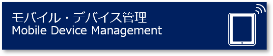
迅速なモバイル・デバイス登録を実現。インベントリーやデバイス・ポリシーの管理と制御を提供します
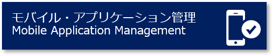
アプリのライフサイクル (追加・更新・削除) 管理やカタログ管理、制御機能 (アプリ必須化設定等) を提供します
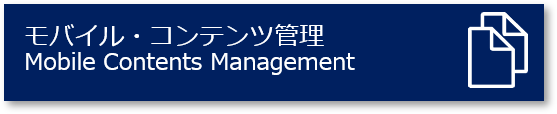
コンテンツ管理の機能を提供します (配布や認証による使用許可等)データ漏えい防止機能で重要情報を保護します
社内システムとの連携やセキュア・アクセスの機能を提供します。(N/W設定変更不要)
コンテナにより業務データを暗号化 (セキュリティー確保) し一元管理します
IBM MaaS360 機能概要
Mobile Device Management
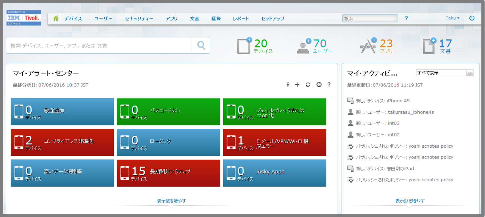
- デバイス登録、構成、セキュリティー・ポリシー管理及びデバイス・アクション
(メッセージ送信、位置特定、ロック、ワイプなど)
- 自動遵守規則、個人所有持ち込み機器(BYOD)プライバシー設定、
「モビリティー・インテリジェンス」ダッシュボード及びレポート機能
Mobile Application Management
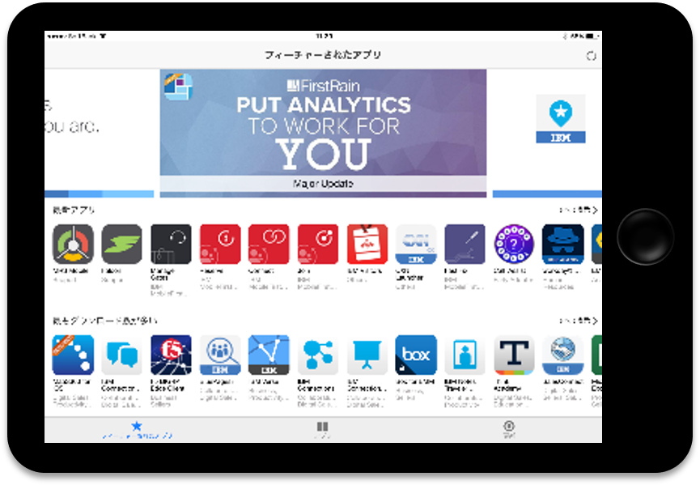
- アプリケーションを追加し、MaaS360によって管理されるサポート
・デバイスにそれらを配布する機能(MaaS360 App Catalog)
- 「App Catalog」・・・ユーザーがアプリケーションを表示、インストール、更新
・管理時のアラートを受けられるオンデバイス・アプリケーション
Mobile Expense Management
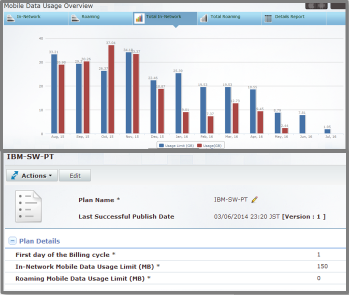
- データ通信量の制限、ローミングなどのポリシーを作成し、管理対象デバイスへの割り当てを実施
- ネットワーク及びローミング・データ利用の両方について、閾値アラートおよびメッセージの送信
- リアルタイムレポート・分析
Secure Mobile Mail
- Eメール及び添付ファイルの転送などを制限し、Eメール・セキュリティー向上
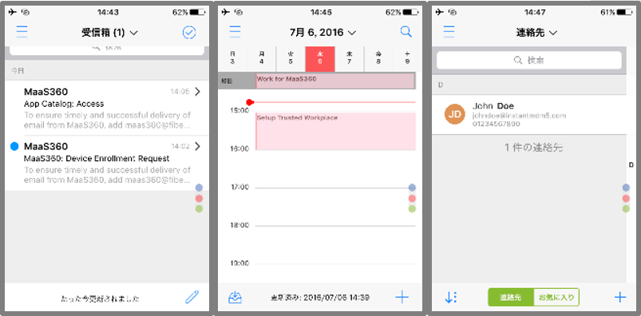
- 認証の実装、切り取り/コピー/貼り付けの制限、添付ファイルを表示のみにロックする機能等
- ユーザーは企業のEメール、カレンダー、連絡先をセキュアに利用可能
Secure Mobile Browser
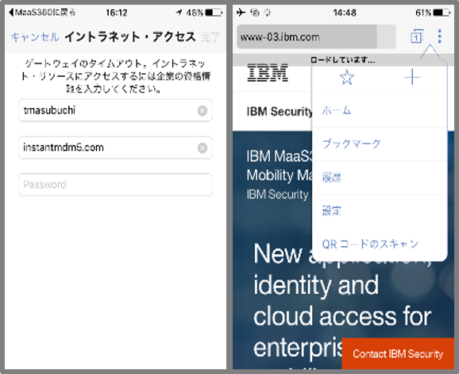
- SNSやアダルト・サイトなど独自にカテゴライズされたWebサイトをフィルタリング
- セキュリティー・ポリシーなどの機能を提供するWebブラウザーApp
- 他オプションと組み合わせることで、アプリケーション・ポリシーやホワイトリスト・ブラックリスト、
Cookieの制限、コピー/貼り付け、キオスク・モードの有効化が可能
Mobile Application Security
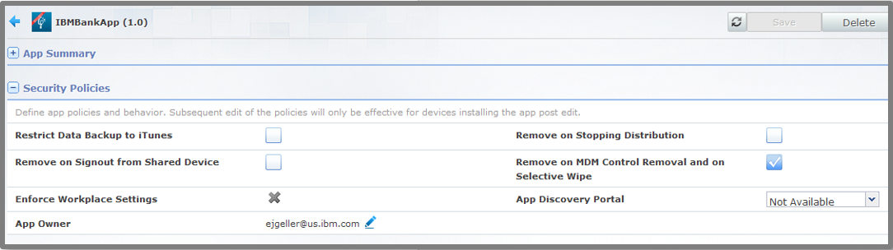
- エンタープライズ・アプリケーションに対しWorkplace SDKを利用しデータ保護の機能を提供
- iOSアプリケーションに対してはアプリケーションのアップロード、プロファイルのプロビジョニング、認証の統合を実現
- Gateway for Appsと連携し、イントラネットへのアクセスやデータ･セキュリティー設定の実施が可能
Mobile Content Management
- 対象デバイスに文章を追加、配布
- ユーザーが文章にアクセスし表示・共有する為の、パスワード保護された�オンデバイス・コンテナー(Doc Catalogue)の提供
- SharePoint、Box及びGoogleドライブなどクラウド・ストレージとのシームレスな連携
- Gateway for Documentsと連携し、社内SharePointや�Windowsファイル共有へのアクセスを実現
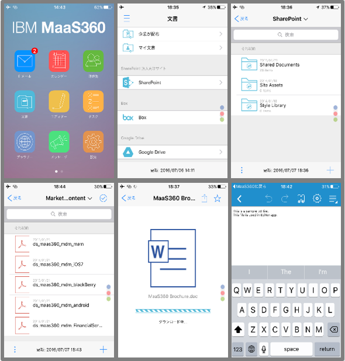
- 管理される文書について、バージョン管理、監査、保護
Mobile Document Editor
- .Doc, .PPTおよび.XLSファイルの作成及び編集機能、スライドの�プレゼンテーションモード機能、MaaS360 for iOSからの電子メール添付ファイル及び�その他のファイルの作業の円滑化
Mobile Document Sync
- 管理されたモバイル・デバイス全体でユーザー・コンテンツを同期
- 管理者はコンテンツに対しセキュリティー・ポリシーを適用
- コンテンツはクラウド及びデバイスの両方で保護された方法で保管され、Doc Catalogueによって、セキュアにアクセスを提供
Gateway for Apps
- 個別開発したエンタープライズAppに対し、Mobile Application Securityと連携し、App組み込み型VPNを提供
- フルデバイスVPN接続をせずにイントラネットへの接続を実現
- この機能を利用するためにはMobile Application Securityが必要
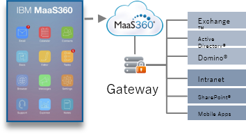
Gateway for Documents
- Mobile Content Managementと連携し、イントラネットにあるプライベートSharePointやWindowsファイル共有サーバーに対し、フルデバイスVPN接続を利用せずにアクセスを実現
- この機能を利用するためにはMobile Content Managementが必要
Gateway for Browser
- Secure Mobile Browserを利用し、フルデバイスVPN接続を利用することなく、承認済みの内部Webサイトにアクセスを実現
- この機能を利用するためにはSecure Mobile Browserが必要
IBM MaaS360 による管理機能
安全かつ自由にモバイル・デバイスをご活用いただくため、ポリシーの適用と徹底を支援する様々な管理機能を提供
OTAでのポリシー適用
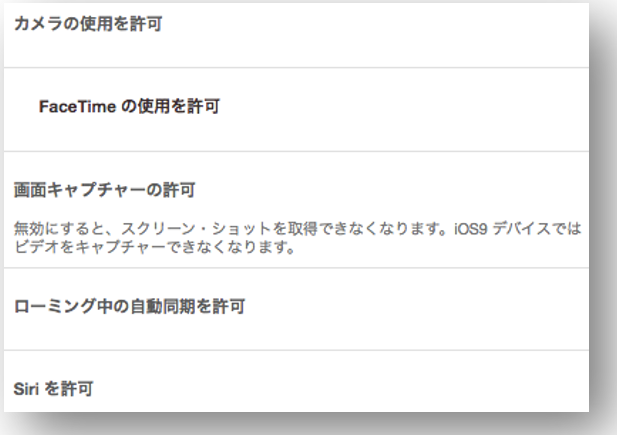
企業独自のデバイス利用ポリシーを定義しリモートから適用します。更新があれば、リモートから最新のポリシーを適用します
Location-Based Policies(位置情報ベース)
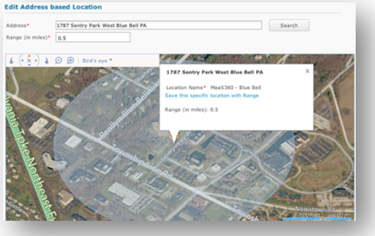
物理的な位置(住所)やネットワーク接続(SSID)
でポリシーを適用することが出来ます
ポリシーの強制
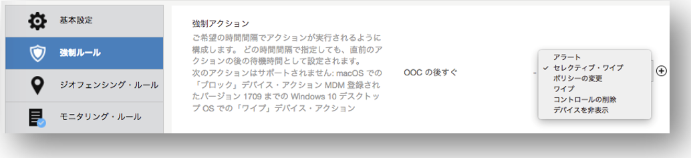
ポリシーに違反した場合に自動的に実行するアクション(アラート、
ワイプなど)を定義しポリシーを強制することができます
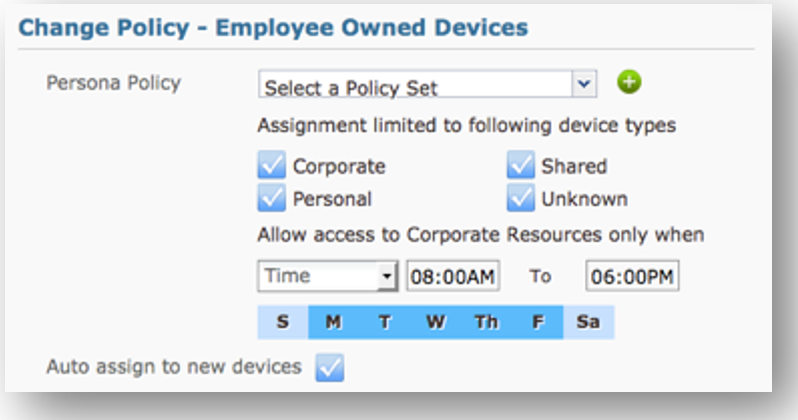
Time-Based Policies(時間ベース)
日付や曜日、または、時間で適用する
ポリシーを切り替えることが出来ます
IBM MaaS360は機能ごとのサービス提供と、それを組み合わせたライセンス提供を行っています。
お客様が活用される範囲に合わせて、4つのライセンスでご契約いただくことができます。
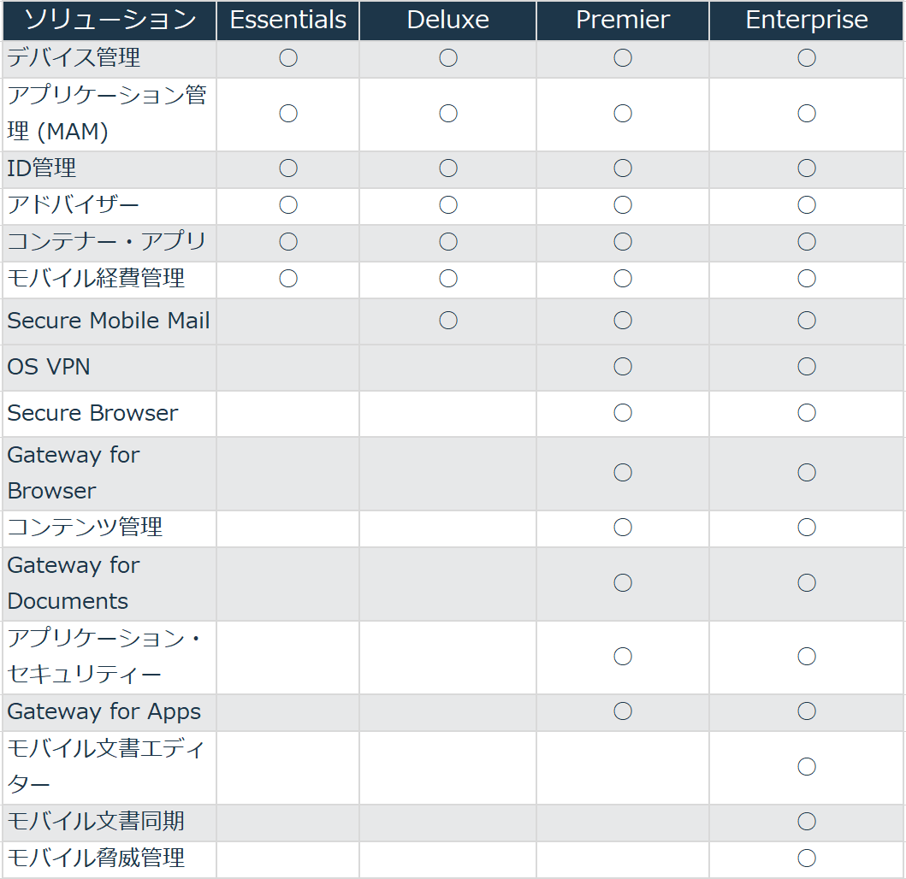